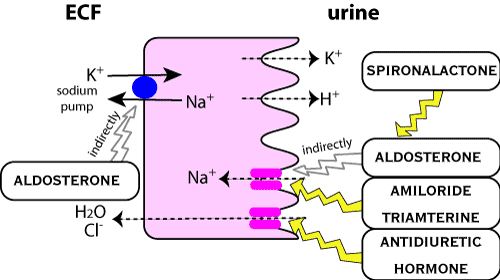

Diuretics acting in the late distal tubule / early collecting duct

Sites of action.
Aldosterone is a steroid hormone which binds to a nuclear receptor which stimulates
transcription mRNA which codes for the basolateral Na/K-ATPase pump and the
luminal Na+ channels. This leads to an increase in Na/K-ATPase pump activity
and therefore an increase in Na+ resorption. K+ is lost in exchange for resorbed
Na+ to maintain electronutrality.
Spironolactone is structuraly similar to aldosterone and acts
as a competitive antagonist of aldosterone. Therefore spironolactone inhibits
aldosterone's action on the cells located between the distal renal tubules and
the collecting ducts called the "principal cells of cortical collecting
ducts" and causes an increased excretion of Na+, Cl- and water and a decreased
excretion of K+, NH4, P04 It has no effect on carbonic anhydrase or renal transport
mechanisms. It has its greatest effect in patients with hyperaldosteronism.
It usually elicits only mild diuresis. It is useful in congestive heart failure
because of its interactions with the RAAS, but also interacts with oestrogen
and testosterone receptors and is going out of fashion in people because of
this.
limited degree of diuresis when used on its own
-used in combination with other classes, especially loop diuretics, in patients
where hypokalaemia due to other diuretics is likely to cause serious problems
especially if on digitalis or if unable to supplement with dietary potassium
- used in combination with other classes in cases of severe fluid retention
eg. refractory ascites, pulmonary oedema secondary to heart failure which is
non-responsive
Used for heart failure in people ± ACE inhibitors
- too expensive in animals.
Absorption - gradual onset of action, peak at 48-72 hours, duration
for 2-3 days after therapy has stopped
Distribution - 98% bound to plasma protein - CBG - corticosteroid binding
globulin and albumin
Metabolism - rapidly metabolised to a number of metabolites one of
which (canrenone) is thought to also have diuretic activity
- spironolactone has a short tl/2 of 1-2 hours in humans where as canrenone
has a tl/2 of about 20 hours
Triamterene and amiloride directly block
sodium channels on apical (luminal) membrane and therefore decrease Na+ flux
which in turn causes a decrease in K+ transport. This only occurs if Na/K transport
is increased ie. using other diuretics or there is a physiological defect. They
have no effect on normal animals. They act within 2 hours, peak 6-8 hours, duration
12-16 hours
These drugs can produce hyperkalaemia if they are combined with potassium supplementation
or ACE inhibitors.
back to diuretics
| 6 Cardiovascular index |
| |
copyright
Massey University
|